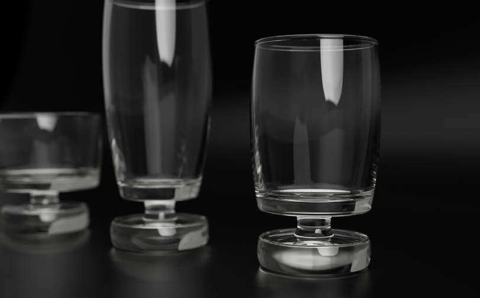
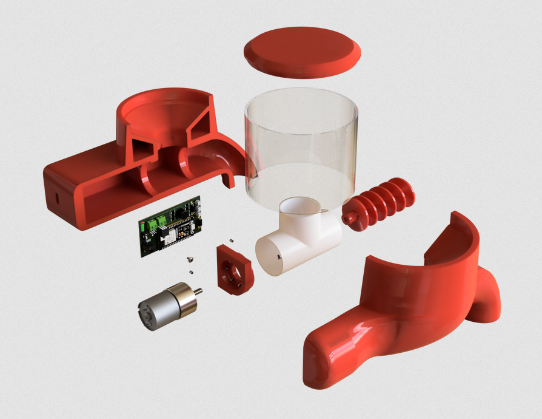

Projects
Project work
A selection of product and concept work. The long writeups are still being rebuilt, so this page stays short and direct for now.

A concept project focused on a clear product idea, approachable form, and a direction that could move toward production.

A project built around movement, control, and the relationship between form and mechanical behavior.

A motorcycle camera gimbal concept looking at mounting, stability, and a more usable filming setup on the road.

A mobility exploration shaped by balance, compact packaging, and the practical feel of a rideable object.

A lighting concept for hands-on work, with attention to usability, placement, and workshop conditions.

A portable serving set shaped around carrying, setup, and the small details that make an outdoor product pleasant to use.
Detailed project pages can later point to Notion or another external source. The structure is already in place for that, without changing the visible layout again.